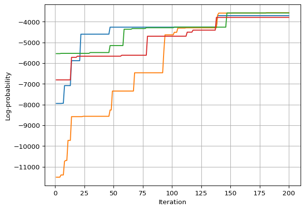
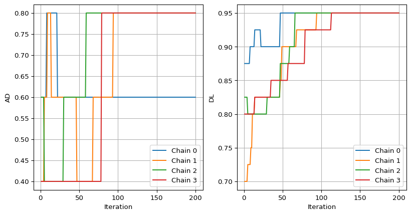
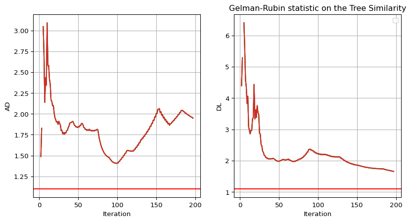
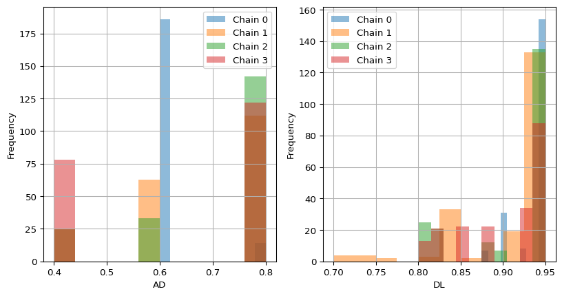

Analyzing MCMC Runs
In this notebook we will analyze the samples of a MCMC.
We analye the evolution of MCMC runs with tree similarities in combination with the Gelman-Rubin statistic.
Imports
Code
Run MCMC
Below we run 4 Markov Chains, for 200 iterations each, with different initial trees.
Generate a ground-truth mutation history and a noisy single-cell mutation profile
The below cell generates a random tree with 4 mutations, plus root.
Code
Generate an initial tree to start the Markov Chain from
We also choose a random tree here.
Code
Generate a noisy single-cell mutation profile from the ground-truth tree
Code
## generate some little nois data
# Set up the simulation model
csm = yg.tree_inference.CellSimulationModel(
n_cells=1000,
n_mutations=mutations,
fpr=0.01,
fnr=0.2,
na_rate=0.0,
observe_homozygous=False,
strategy=yg.tree_inference.CellAttachmentStrategy.UNIFORM_EXCLUDE_ROOT,
)
# Generate Data
seed = 42
rng = random.PRNGKey(seed)
data = yg.tree_inference.gen_sim_data(
csm,
rng,
true_tree
)
mut_mat = jnp.array(data['noisy_mutation_mat'])
Run the Markov Monte Carlo Chain
The below cell runs a 4 differnt MCMC chain. We initialize it with the initial tree from before. We configure the move probabilities and error rates and run the MCMC chain for 200 iterations. The sampels are saved to disk and loaded back into memory as chains may be very long.
mcmc_datas = []
n = 1
# run 4 chains, each with a different initial tree
for starting_tree in inital_trees:
print("Starting MCMC for tree: ", n)
## Run MCMC
# converting initial tree from TreeNode to Tree format
init_tree_t = yg.tree_inference.Tree.tree_from_tree_node(starting_tree)
## file handling
# set up save location
save_dir = Path("")
# make directory if it doesn't exist
save_dir.mkdir(parents=True, exist_ok=True)
save_name = "mcmc_test"
full_save_name = save_dir / f"{save_name}.json"
# make file / empty it if it exists
with open(full_save_name, "w") as f:
f.write("")
# set the move probabilities and error rates
move_probs = yg.tree_inference.MoveProbabilities()
error_rates = yg.tree_inference.ErrorCombinations.IDEAL.value
# run mcmc sampler
yg.tree_inference.mcmc_sampler(
rng_key=rng,
data=mut_mat,
error_rates=(error_rates.fpr, error_rates.fnr),
move_probs=move_probs,
num_samples=200,
num_burn_in=0,
out_fp=full_save_name,
thinning=1,
init_tree=init_tree_t,
)
# load the data from disk
mcmc_data = yg.serialize.read_mcmc_samples(save_dir / f"{save_name}.json")
# append the data to the list
mcmc_datas.append(mcmc_data)
#delete file
(full_save_name).unlink()
print("finished MCMC")
n += 1
Starting MCMC for tree: 1
finished MCMC
Starting MCMC for tree: 2
finished MCMC
Starting MCMC for tree: 3
finished MCMC
Starting MCMC for tree: 4
finished MCMC
# unpack the data - reads in the serialized trees to Tree objects
# takes some time as tree objects are built and checked for validity
for i in range(len(mcmc_datas)):
mcmc_datas[i] = yg.analyze.to_pure_mcmc_data(mcmc_datas[i])
Let’s plot the log-probability of the trees over the iterations
for i in range(len(mcmc_datas)):
plt.plot(mcmc_datas[i].iterations, mcmc_datas[i].log_probabilities)
plt.xlabel("Iteration")
plt.ylabel("Log-probability")
plt.grid()
plt.show()

Let’s calculate the tree similarity over the iterations
metrics = ["AD","DL"]
base_tree = true_tree
# Create an empty list to store the results
results_AD = []
results_DL = []
for metric_name in metrics:
metric = yg.analyze.Metrics.get(metric_name)
for i in range(len(mcmc_datas)):
iteration, result = yg.analyze.analyze_mcmc_run(mcmc_datas[i], metric, base_tree)
# Append the result to the results list as a dictionary
if metric_name == "AD":
results_AD.append({"Iteration": iteration, "Chain": i, "AD": result})
elif metric_name == "DL":
results_DL.append({"Iteration": iteration, "Chain": i, "DL": result})
# Convert the results list to a pandas DataFrame
results_AD = pd.DataFrame(results_AD)
results_DL = pd.DataFrame(results_DL)
Let’s plot the tree similarity over the iterations
# two subplots one for the AD and one for the DL
fig, axs = plt.subplots(1, 2, figsize=(10, 5))
for i in range(len(mcmc_datas)):
axs[0].plot(results_AD[results_AD["Chain"] == i]["Iteration"][i], results_AD[results_AD["Chain"] == i]["AD"][i], label=f"Chain {i}")
axs[1].plot(results_DL[results_DL["Chain"] == i]["Iteration"][i], results_DL[results_DL["Chain"] == i]["DL"][i], label=f"Chain {i}")
axs[0].set_xlabel("Iteration")
axs[0].set_ylabel("AD")
axs[0].grid()
axs[0].legend()
axs[1].set_xlabel("Iteration")
axs[1].set_ylabel("DL")
axs[1].grid()
axs[1].legend()
plt.show()

Let’s calculate the Gelman-Rubin statistic over the iterations
# notably this code is rather poor, but you get the usage of the api
rhat_AD = []
rhat_DL = []
for metric_name in metrics:
# Append the result to the results list as a dictionary
if metric_name == "AD":
# calculate rhat - returns the 4-length array of rhats
chains = np.array(results_AD[metric_name])
rhat = yg.analyze.rhats(chains)
rhat_AD.append(rhat)
elif metric_name == "DL":
# calculate rhat - returns the 4-length array of rhats
chains = np.array(results_DL[metric_name])
rhat = yg.analyze.rhats(chains)
rhat_DL.append(rhat)
Code
# two subplots one for the AD and one for the DL
fig, axs = plt.subplots(1, 2, figsize=(10, 5))
for i in range(len(mcmc_datas)):
axs[0].plot(np.arange(1,len(rhat_DL[0])+1,1), rhat_AD[0])
axs[1].plot(np.arange(1,len(rhat_DL[0])+1,1), rhat_DL[0])
# make horizontal lines at 1.1
axs[0].axhline(y=1.1, color='r', linestyle='-')
axs[1].axhline(y=1.1, color='r', linestyle='-')
axs[0].set_xlabel("Iteration")
axs[0].set_ylabel("AD")
axs[0].grid()
axs[1].set_xlabel("Iteration")
axs[1].set_ylabel("DL")
axs[1].grid()
axs[1].legend()
plt.title("Gelman-Rubin statistic on the Tree Similarity")
plt.show()

We see that for these few iterations we do not achive approximate convergence defined to be below 1.1.
The posterior is definitly not well explored yet.
Let’s visualize the trees
We visualize the posterior shape or in approximate terms the frequency of trees sampled over the tree similarities with respect to the true tree.
Code
# two subplots one for the AD and one for the DL
# the tree similarities on the x-axis and chains in distinct colors
fig, axs = plt.subplots(1, 2, figsize=(10, 5))
for i in range(len(mcmc_datas)):
axs[0].hist(results_AD[results_AD["Chain"] == i]["AD"][i], label=f"Chain {i}", alpha=0.5)
axs[1].hist(results_DL[results_DL["Chain"] == i]["DL"][i], label=f"Chain {i}", alpha=0.5)
axs[0].set_xlabel("AD")
axs[0].set_ylabel("Frequency")
axs[0].grid()
axs[0].legend()
axs[1].set_xlabel("DL")
axs[1].set_ylabel("Frequency")
axs[1].grid()
axs[1].legend()
plt.show()

We indeed see that the chains differ quite a lot. The chains are not well mixed yet. None of the chains agree on the shape of the posterior.